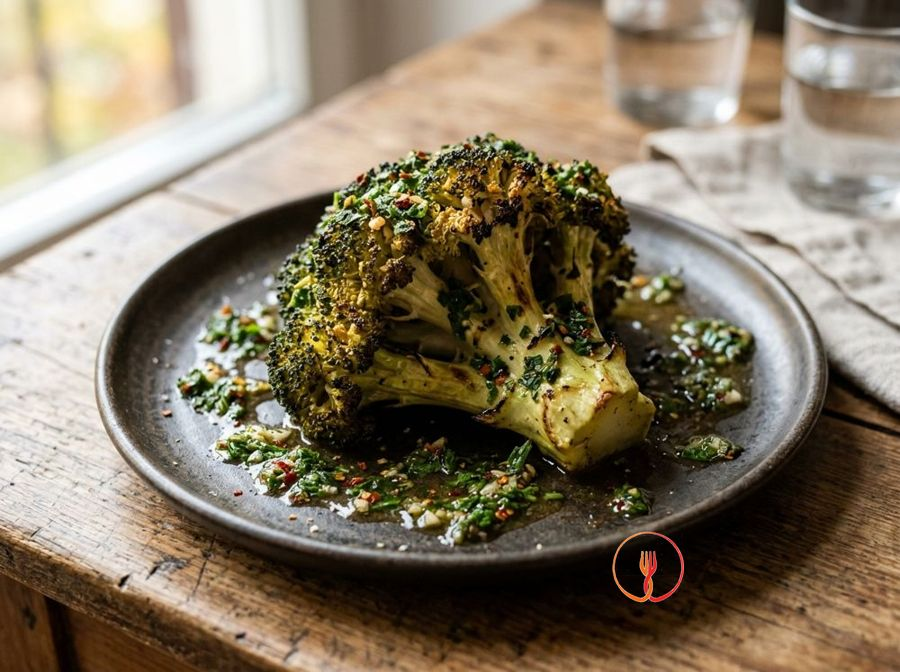

Broccolo Hasselback arrosto con salsa chimichurri
Una tecnica scenografica applicata al broccolo intero, arrostito lentamente al forno e servito con una salsa chimichurri aromatica e pungente.
Ingredienti
- Broccoli medi interi2 pezzi
- Prezzemolo fresco1 mazzetto
- Aglio2 spicchi
- Origano secco1 cucchiaio
- Peperoncino secco1 pizzico
- Aceto di vino rosso30ml
- Olio extravergine d'oliva100ml
- Sale grossoq.b.
Allergeni
Solfiti
Procedimento
- Inizia preparando i 2 broccoli medi: elimina le foglie esterne e la base legnosa del gambo, ma lascia la testa integra. Con un coltello ben affilato, pratica delle incisioni verticali profonde ogni centimetro su tutta la superficie, fermandoti prima di arrivare alla base per non separare le fette. Devi ottenere una sorta di ventaglio che permetterà al calore e ai condimenti di penetrare nel cuore della verdura. Il consiglio dello chef: posiziona due cucchiai di legno ai lati del broccolo mentre tagli; agiranno da 'fermo' per la lama, impedendoti di affettare il vegetale fino in fondo per errore.
- Porta a bollore una pentola capiente d'acqua e aggiungi il sale grosso. Immergi i broccoli a testa in giù e lasciali sbollentare a fiamma vivace per esattamente 5 minuti. Questa precottura è fondamentale per ammorbidire le fibre più dure del gambo senza stracuocere le cime. Una volta pronti, scolali con delicatezza e tamponali accuratamente con un canovaccio pulito: devono essere ben asciutti per arrostire correttamente in forno. Il consiglio dello chef: non saltare questo passaggio, altrimenti il cuore del broccolo rimarrà troppo duro rispetto alle punte esterne che cuociono più in fretta.
- Dedicati alla salsa tritando finemente al coltello un mazzetto di prezzemolo fresco e i 2 spicchi d'aglio. Evita il mixer elettrico perché le lame ad alta velocità scaldano le erbe, ossidandole e rovinandone il profumo vibrante. Lavora con pazienza finché non otterrai un battuto omogeneo ma che conservi ancora una texture rustica e visibile. Il risultato deve essere un trito profumato e dal colore verde brillante. Il consiglio dello chef: rimuovi l'anima interna dell'aglio se preferisci un sapore meno pungente e più digeribile per i tuoi ospiti.
- In una ciotola media, unisci il trito di erbe a 1 cucchiaio di origano secco, un pizzico di peperoncino, 30ml di aceto di vino rosso e 100ml di olio extravergine d'oliva. Mescola energicamente con una forchetta o una piccola frusta per emulsionare i liquidi e distribuire uniformemente le spezie. Lascia riposare la salsa per almeno 10 minuti affinché i sapori si fondano perfettamente tra loro, creando un condimento sapido e bilanciato. Il consiglio dello chef: prepara la salsa con un po' di anticipo per permettere all'aceto di ammorbidire l'intensità del prezzemolo e dell'aglio, rendendo tutto più armonioso.
- Prepara una teglia rivestita di carta forno e adagia i due broccoli interi con la parte incisa rivolta verso l'alto. Utilizzando un pennello da cucina, distribuisci generosamente circa metà della salsa chimichurri su tutta la superficie, insistendo particolarmente nelle fessure create in precedenza. Assicurati che il condimento scivoli all'interno dei tagli per insaporire il broccolo anche nel cuore del gambo. Il risultato visivo sarà una verdura completamente velata di verde e profumi mediterranei. Il consiglio dello chef: usa delicatamente le mani per allargare le fette del broccolo mentre spennelli, così la salsa arriverà davvero ovunque.
- Copri accuratamente la teglia con un foglio di alluminio, sigillando bene i bordi per non far fuoriuscire il vapore. Inforna in forno statico già caldo a 200°C e lascia cuocere per 20 minuti esatti. In questa fase, l'umidità intrappolata sotto l'alluminio cuocerà il broccolo in modo uniforme, rendendolo tenero come se fosse al vapore ma con il sapore della salsa. Otterrai una verdura cotta ma ancora soda, che ha già iniziato ad assorbire i sentori del chimichurri. Il consiglio dello chef: assicurati che il foglio di alluminio non tocchi direttamente la superficie del broccolo per non 'strappare' via il condimento durante la rimozione.
- Rimuovi con cautela il foglio di alluminio, facendo attenzione al getto di vapore bollente, e prosegui la cottura in forno per altri 15-20 minuti. Il calore diretto inizierà a dorare le punte delle infiorescenze e a rendere croccanti i bordi delle fette tagliate a Hasselback. Dovrai ottenere una superficie ben brunita con dei riflessi quasi caramellati, mentre il profumo di aglio e olio arrostito si diffonderà in cucina. Il consiglio dello chef: negli ultimi 5 minuti puoi azionare la funzione grill per ottenere una croccantezza extra e un colore ancora più invitante, ma tieni d'occhio il forno per non bruciarli.
- Sforna i broccoli e lasciali riposare per 5 minuti direttamente nella teglia; questo breve riposo permette ai succhi interni di ridistribuirsi, rendendo la polpa più succulenta. Trasferiscili su un piatto da portata, interi per un effetto scenografico o tagliati a metà per mostrare la particolare sezione. Irrora infine ogni pezzo con il resto della salsa chimichurri fresca che avevi tenuto da parte, per aggiungere una nota di acidità e freschezza finale. Il consiglio dello chef: servi il piatto tiepido piuttosto che bollente, per esaltare al massimo la complessità aromatica delle erbe fresche e il contrasto di consistenze del broccolo.
Valori nutrizionali (stima)
| Per porzione (180 g) | Per 100 g | |
|---|---|---|
| Energia | 1163 kJ / 278 kcal | 644 kJ / 154 kcal |
| Proteine | 5.9 g | 3.3 g |
| Carboidrati | 14 g | 7.9 g |
| di cui zuccheri | 3.5 g | 2.0 g |
| Grassi | 24 g | 13 g |
| di cui saturi | 3.3 g | 1.9 g |
| Fibre | 5.8 g | 3.2 g |
| Sale | 0.9 g | 0.5 g |
Valori stimati con l'AI su dati medi CREA / USDA: sono indicativi e non sostituiscono il parere di un medico o di un nutrizionista.
Apri la ricetta nell'app per la lista della spesa, le schede ingredienti e i negozi vicini.